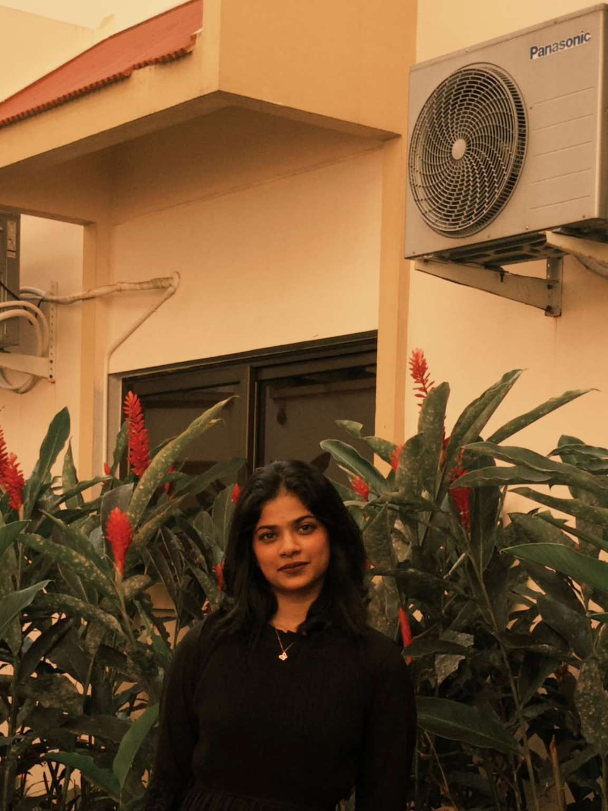

Bachelor of Technology
Computer Science Engineering
PA College of Engineering, Mangalore · VTU
01 / ABOUT ME
A student, a learner, and someone who enjoys exploring how things work.

HELLO THERE!
Enthusiastic and goal-driven, with a strong academic foundation and a passion for continuous learning.
Skilled in problem-solving, critical thinking and effective communication. Adept at managing multiple tasks, working collaboratively in team environments and adapting to new challenges with a proactive approach. Eager to apply academic knowledge in real-world settings through internships and hands-on projects.
Computer Science Engineering
PA College of Engineering, Mangalore · VTU
Science [PCMC]
Yenepoya University College, Mangalore